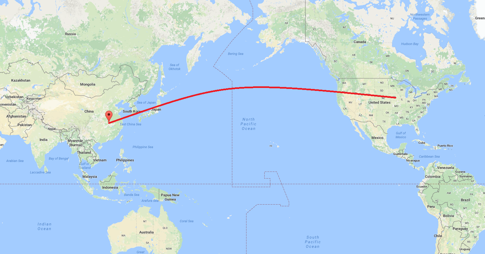

Home
Introduction
My family's culture is Chinese.
World Map
My parents are first-generation immigrants from China. They came to America in 2001. It was the first time anyone in my family had ever left China.
One of the main reasons Chinese people immigrated to America was for work opportunities. Some people saved up money to take home to China, but others stayed permanently. Some people immigrated to escape political unrest in China.
My own parents immigrated to America to complete their college education, and for job opportunities afterward. After getting a degree in Maryland, they moved to Iowa City, Iowa. My immediate family members are the only members of my exten